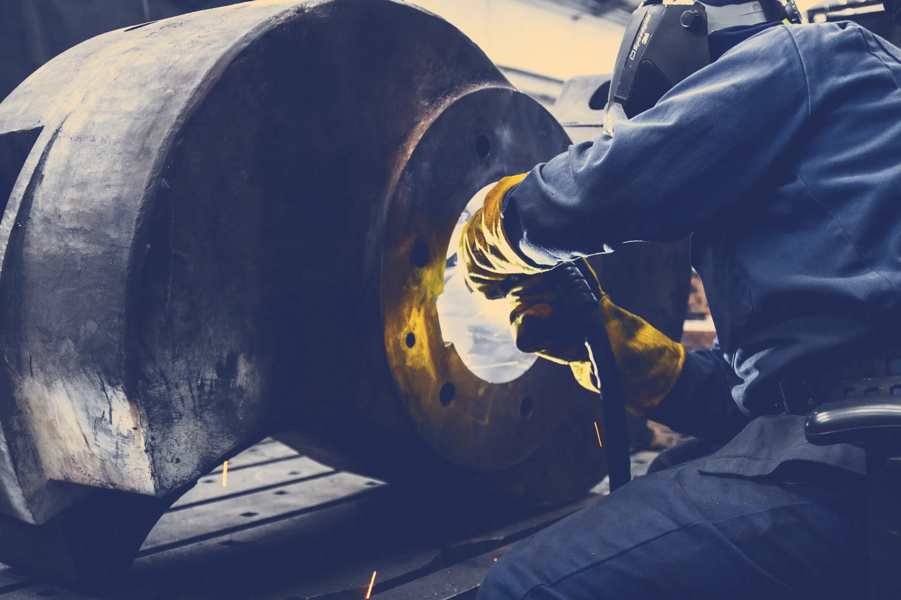
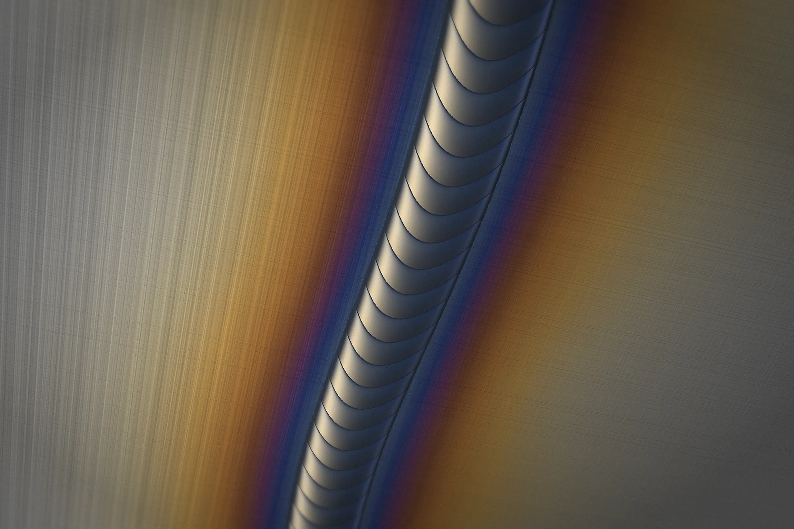
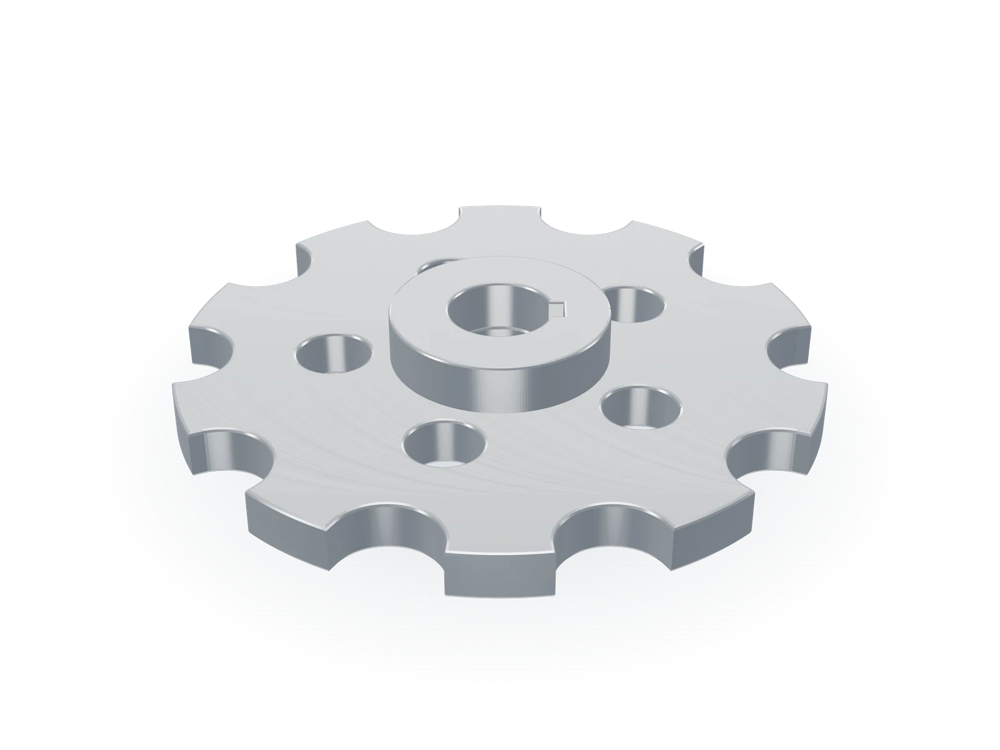

Přesné díly a svařence pro výrobce strojů.
Frézujeme, soustružíme, svařujeme a montujeme v Rousínově u Brna. Od jednoho prototypu po série v tisících kusů, s měřicím protokolem ke každé dodávce.

Máte výkres?
Cenu a termín vám pošleme do 48 hodin.
Přetáhněte sem PDF nebo STEP
Výkresy se přenesou rovnou do poptávky.
Pět technologií v jedné hale
Dodáváme víc než 60 výrobcům balicích linek, zemědělské techniky, robotických pracovišť a hydrauliky v Česku, Německu a Rakousku.
Svařenec, který nemusíte rovnat
Sklad, svařovna, žíhací pec, obrobna a měrovna jsou v jedné hale 80 × 40 m. Rám po svaření vyžíháme, upneme jednou a obrobíme všechny dosedací plochy i uložení ložisek.

Dělení
Tyče, desky a jekly s atestem 3.1. Pila nařeže přířezy na míru, zbytky evidujeme podle tavby.
Svařování
Šest pracovišť MIG/MAG a TIG s odsáváním. Svářeči mají zkoušky podle EN ISO 9606-1.
Žíhání
Svařenec vyžíháme ve vlastní peci. Pnutí ze svařování se uvolní dřív, než díl obrobíme.
Obrábění a měření
Rám obrobíme na jedno upnutí a první kus změříme v měrovně při 20 °C.
Volná kapacita na osm týdnů
Barva ukazuje vytížení technologie v týdnu, ve stejném pořadí, v jakém se barví zahřátá ocel: slámová znamená volno, modrá plnou výrobu. Aktualizujeme každý pracovní den v 6:00.
| Technologie | T4319. 10. | T4426. 10. | T452. 11. | T469. 11. | T4716. 11. | T4823. 11. | T4930. 11. | T507. 12. |
|---|---|---|---|---|---|---|---|---|
| 5osé frézovánívolno od 9. 11. | 96 %, obsazeno | 94 %, obsazeno | 88 %, obsazeno | 62 %, volno | 55 %, volno | 48 %, volno | 40 %, volno | 35 %, volno |
| 3osé frézovánívolno od 2. 11. | 92 %, obsazeno | 86 %, obsazeno | 71 %, volno | 66 %, volno | 60 %, volno | 52 %, volno | 45 %, volno | 38 %, volno |
| Soustruženívolno od 23. 11. | 98 %, obsazeno | 97 %, obsazeno | 92 %, obsazeno | 85 %, obsazeno | 80 %, obsazeno | 72 %, volno | 64 %, volno | 50 %, volno |
| Broušenívolno od 9. 11. | 88 %, obsazeno | 82 %, obsazeno | 78 %, obsazeno | 64 %, volno | 58 %, volno | 52 %, volno | 46 %, volno | 40 %, volno |
| Svařovánívolno od 16. 11. | 92 %, obsazeno | 90 %, obsazeno | 86 %, obsazeno | 80 %, obsazeno | 74 %, volno | 66 %, volno | 58 %, volno | 50 %, volno |
| Montážvolno od 19. 10. | 70 %, volno | 78 %, obsazeno | 84 %, obsazeno | 80 %, obsazeno | 72 %, volno | 64 %, volno | 56 %, volno | 48 %, volno |
- pod 45 %
- 45–59 %
- 60–74 %
- 75–84 %
- 85–92 %
- 93 % a víc
Pod 75 % máme volno i na krátký termín.

Dodací lhůta formátových dílů klesla z devíti týdnů na tři.
Výrobce balicích linek, Brno
Převzali jsme výrobu 1 400 hliníkových hvězdic a vodítek ročně ve 22 variantách od dodavatele z Bavorska. Opakované varianty máme připravené v programech i přípravcích, takže výroba startuje do dvou dnů od objednávky.
- Materiál
- EN AW-7075
- Varianty
- 22
- Objem
- 1 400 ks/rok
- Lhůta
- 3 týdny
Od výkresu k dodávce
1. denPošlete výkres
PDF a ideálně 3D model ve formátu STEP. NDA podepíšeme předem.
do 48 hodinDostanete nabídku
Cena za kus, cena přípravy a závazný termín dodání.
2 až 4 týdnyVyrobíme a změříme
První kusy každé série kontrolujeme na 3D měřicím stroji.
potvrzený denDodáme
S měřicím protokolem a atestem materiálu, po jižní Moravě vlastní dodávkou.